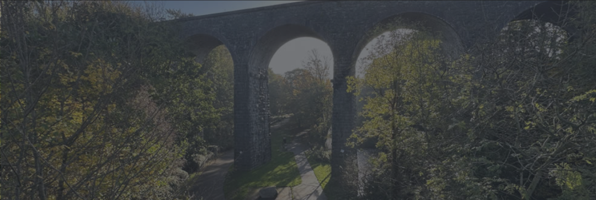
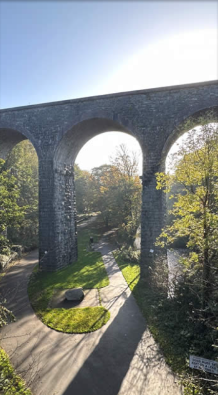
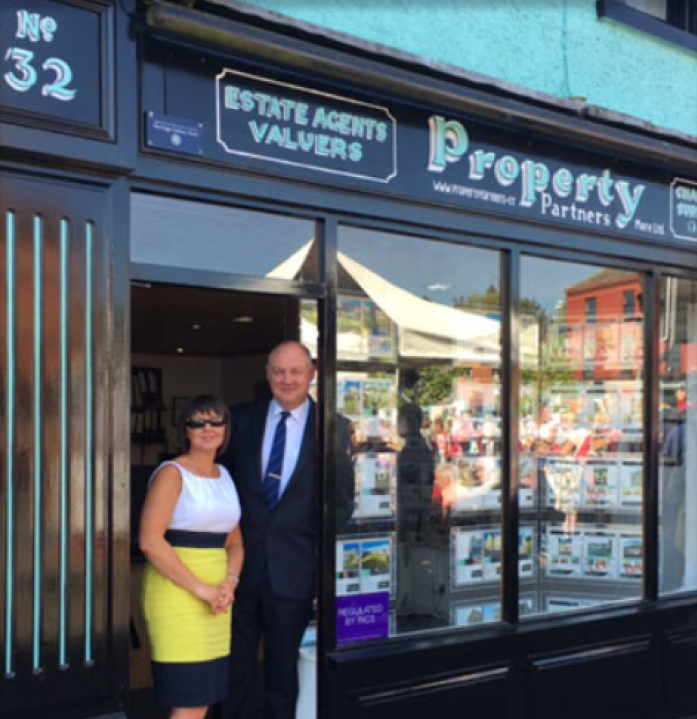
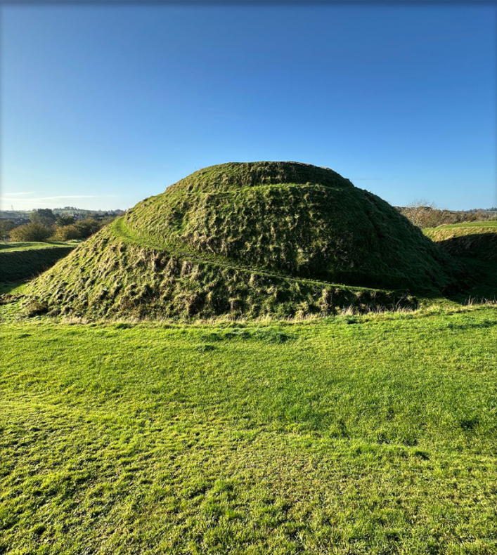

This is a BTEC IT project not affiliated with Property Partners

About Dromore Homes
Leading Estate Agent in Dromore
Meet the Team
Sales and Lettings Administrator
Nikki Starrett
Nikki has 30 year's of experience working in sales in the
Private sector and has been with Dromore Homes since November 2024.
The City of Dromore
Amid the hills of County Down, On Ireland's northern shore.
There is a place of fair renown It's the City of Dromore.
There I found an early love That touched an inmost core,
And caused my rambling steps to rove Towards the City of Dromore.
Neath the Viaduct a tryst we made Beside a bluebell grove.
And on the river's bank we strayed To tell our tale of love.
By the Avenue past Bishops court, Which once a Palace bore,
We spied the gambolling lambs at sport Near the City of Dromore.
We saw the wallflower wildly grow on the crumbling Castle walls.
And watched the lazy Lagan flow Where the Cathedral's shadow falls
On the old Cross our thoughts did dwell Rare relic of days of yore.
And we listened to the vesper bell In the City of Dromore.
We scaled the spiral Norman Mound By the feet of ages worn And viewed
the landscape all around To the distant peaks of Mourne.
As on the summit fringe we stood. We pictured sights before Of roofs
of straw and swellings rude. In the City of Dromore.
Those far off scenes I often recall, Their memory naught can sever.
Mid shade and shine whatever befall They haunt my visions ever.
Though circumstance caused us to part And seas between us roar;
Still I left a portion of my heart In the City of Dromore.

About Dromore Homes
Dromore Homes are the leading estate agent in Dromore,
County Down servicing the mid Down area for sales and rentals in Dromore,
Banbridge, Dromara, Kinallen, Hillsborough, Annahilt, Moira, Lisburn ,
Waringsford, Waringstown, Donaghcloney, Blackskull, Gilford, Craigavon,
Magheralin, Loughbrickland, Rathfriland, Ballyward, Closkelt, Ballynahinch
and the surrounding areas. Established in 1993, the company was headed by
Patrick Hanna, a Chartered Surveyor, but ownership was handed over to Julie
Pyper.
To provide the best possible service, we believe close communication
between agent and client is essential. Our experienced team is in place
to provide you with the best professional, responsive and personalised
service possible.

History of Dromore
The name Dromore historically means 'large ridge'.
It is a small market and civil parish in the County of Down with
a recorded population in 2021 of 6395 people.
Dromore had its own railway station from 1863 to 1956 and a 74ft
Victorian viaduct which once carried the GNRI railway across the
River Lagan.
In the town's centre is Market Square where a rare set of cast metal stocks
can be found, estimated to be 300 years old. These were used as a form of
physical punishment where its victims were partially immobilised and left
to the elements without bread or water, to the scorn of passers-by.
Dromore lies within the local government area of Armagh City, Banbridge
and Craigavon Borough Council. It is 19 miles (31km) south-west
